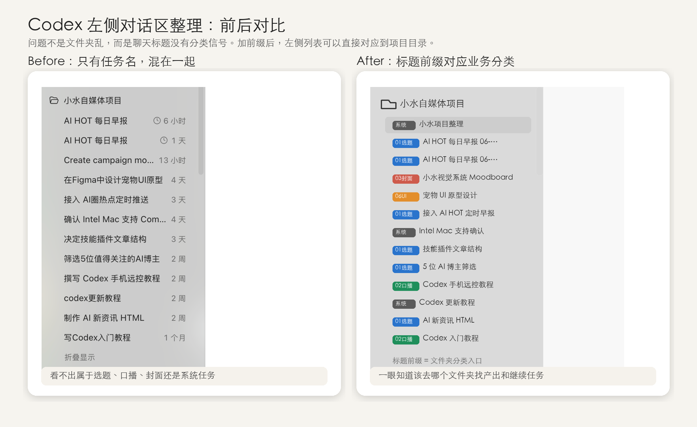

Finder 里有真实分类
- 01-选题与内容
- 02-口播文案
- 03-封面视觉
- 04-视频剪辑
- 06-UI原型
Codex Workflow Case · 2026.06.15
这不是一个“改标题”的小动作，而是一次 AI 工作流整理：让 Codex 左侧聊天区从时间流，变成能继续任务、查找产出、复用流程的项目入口。
Finder 里已经有选题、口播、封面、剪辑和 UI 原型分类；但 Codex 左侧只显示按时间排列的聊天线程。项目越做越久，就越难从一串标题里找到上下文。
先读项目结构，再设计标题前缀，然后直接批量重命名左侧线程，并建立一个“对话与产出索引”。
先看 Finder 里的项目分类，确认真实业务模块。
用 [01选题]、[02口播]、[03封面] 这类前缀做入口。
把左侧线程批量改名，让聊天列表能对应文件夹。
记录每条对话、所属分类、产出位置和下一步。
整理前看不出任务归属；整理后每条标题前面都有分类标签，能够直接对应 Finder 文件夹。

每个前缀都对应一个项目文件夹，左侧聊天区不再只是历史记录，而是可以继续工作的入口。
| 标题前缀 | 对应文件夹 | 适合内容 |
|---|---|---|
| [01选题] | 01-选题与内容 | 热点、AI 日报、栏目、内容规划 |
| [02口播] | 02-口播文案 | 口播稿、教程讲解、去 AI 味改写 |
| [03封面] | 03-封面视觉 | 封面、头像、背景图、视觉风格 |
| [06UI] | 06-UI原型 | App / Web 原型、Figma、界面设计 |
| [系统] | 项目根目录或 notes | 项目整理、工具规则、Codex 使用问题 |
这类整理适合所有“AI 生成很多，但最终版本找不到”的项目。你可以把它延伸成项目管理、内容生产、长期记忆和个人知识库四个方向。
白底、黑线、粉色、绿色、黄色，作为这次 HTML 和飞书画板的核心视觉语言；它借鉴的是元素方法，不直接使用外部作品图片。
视频重点不是“我改了几个标题”，而是“AI 做长期项目时，怎样维护秩序”。
真正有用的 AI 工作流，不只是让 AI 帮你生成内容，也要让 AI 帮你维护秩序。